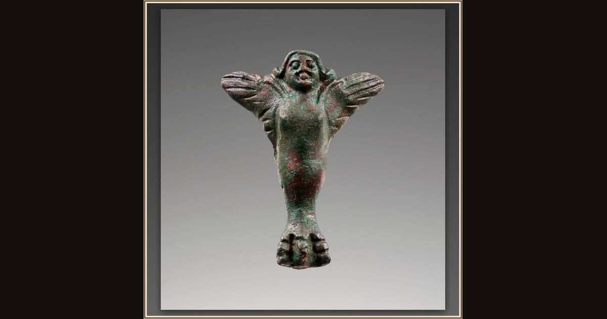

Vessel Foot in the Shape of a Siren
Etruscan (unknown maker) · 4th century B.C. · The J. Paul Getty Museum · Los Angeles, USA
This little bronze Siren once held up a vessel — a keepsake of the sweet, dangerous singers Odysseus sailed carefully past. Explore its place in Book XII of the Odyssey.